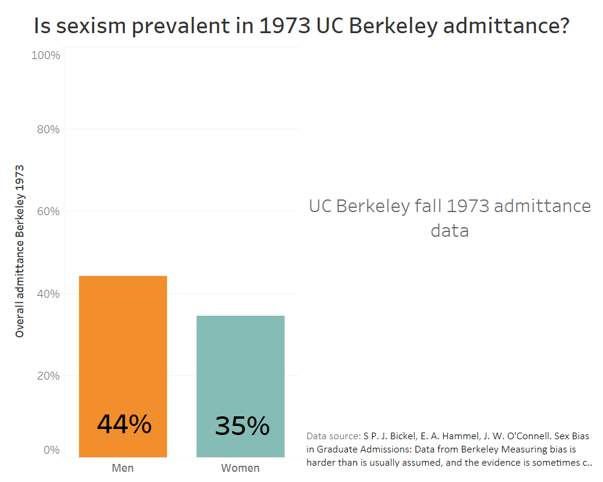
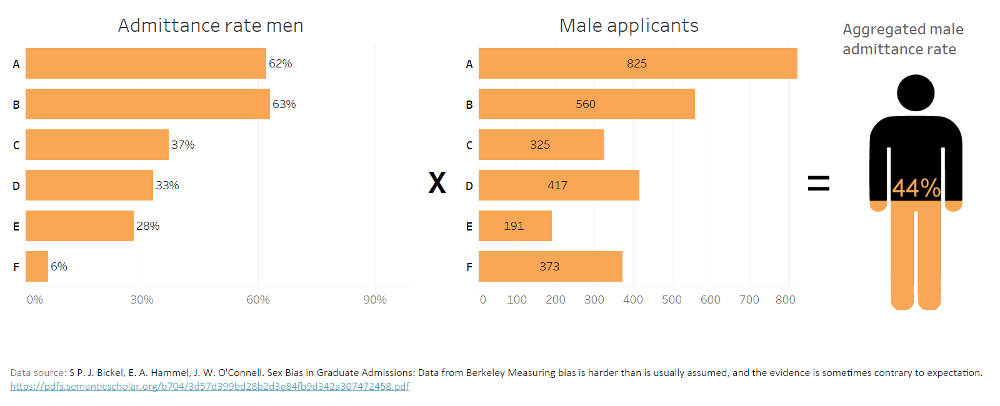

In the fall of 1973, the admittance rates between sexes were significantly different. The question arose whether or not this is a case of gender bias, discrimination, or if this is caused by other factors. Let's take a look at the numbers.
{kind=link}
From these numbers alone it seems evident that there is indeed a case of sex bias, or even sex discrimination in the admittance. One factor we have not yet taken into account, however, is the fact that this is aggregated data. Once we take a look at the whole data set, we might get a better insight on what causes the admittance rates to be so different.
Admittance rates weren't the same across departments.
Certain departments at UC Berkeley were harder to get admitted in. Taking this into account is of critical importance. The overall admittance rates decrease from (unnamed) departments A through F for both sexes. This is the first indication that the original data might have been misleading. However, this alone is not enough to explain the discrepancy between the two admittance rates. Let's take a look at the amount of male and female applicants per department.
From these departments, women apply more often to ones which are harder to get into.
As is seen in the visualization below, male applicants apply more often to the departments which are 'easier' to get in for both sexes. This is opposite for women, as they seem to apply to departments which are harder to get into. This is another indicator that the unsegregated data might tell another story than the aggregated data. One piece of the story, however, is still missing. What about the admittance rate per sex per department?
The differences in admittance rates between departments are very similar.
The difference is minimal. In fact: in certain cases, you can even see the admittance rates for women being higher than that of men. Combining these three numerical facts gives us a clear view of the actual reasoning behind the original discrepancy. Admittance rates are similar per department, or even significantly higher for women, but women don't apply to 'easier' the departments as often as men do. Below is an overview of the visualization.

So how do we arrive at the original discrepancy?
From this point it is simple to find the problem: multiply the amount of female applicants by their admittance rates per department and you get the numbers 44% and 35%. As we see, this is how we get to the original discrepancy in admittance rates between men and women.
{kind=link}

In the end, this does not seem to have been a case of sex bias, but a case of something which is known as the Simpon's Paradox. The Simpson's Paradox is one of many statistical fallacies which we fall for in our daily lives. Berkeley wasn't sued, and there was no implicated sex bias for admittance rates. Why there was such a significant difference between the amount of applicants for the department is debatable, and a subject for a different story. The key thing to understand is that, sometimes, data and visualizations can create a story which does not align with reality. In these cases it is important to be a critical thinker, or to have access to a good statistician to do the thinking for you.
There are three kinds of lies: lies, damned lies, and statistics. - Mark Twain